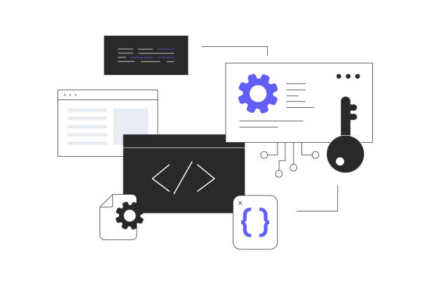

¡Hola! Soy David, Desarrollador Web.
Bienvenido a mi espacio digital. En este sitio, he condensado mi trayectoria, mi proceso creativo y las
soluciones técnicas que he construido a lo largo de mi carrera. Más que un simple listado de trabajos,
este portafolio es una ventana a mi forma de entender la web: funcional, estética y centrada en el
usuario.
A medida que navegues por estas secciones, descubrirás no solo las herramientas que utilizo, sino el
razonamiento detrás de cada línea de código y la pasión que pongo en transformar ideas complejas en
experiencias digitales fluidas.
Te invito a explorar mi mundo y a conectar si crees que podemos
construir algo increíble juntos.